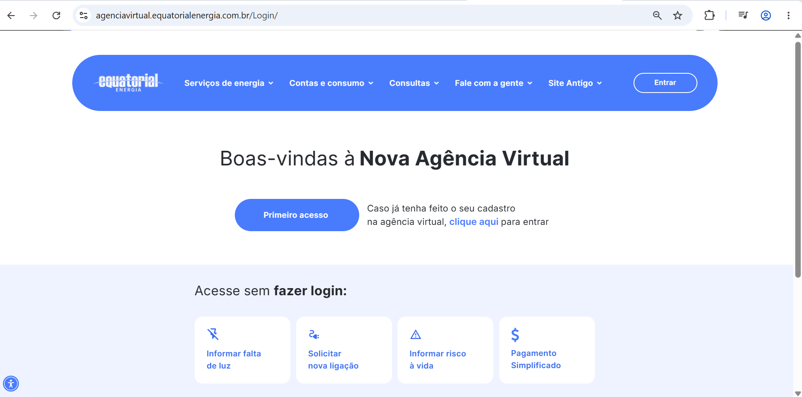

FinFlow
Painel financeiro pessoal com gráficos interativos e sincronização em nuvem.
Desenvolvedor fullstack com uma década entregando aplicações corporativas em OutSystems. Hoje aprofundo em Java no backend e Angular no frontend.


Painel financeiro pessoal com gráficos interativos e sincronização em nuvem.

Gestor de tarefas com quadros kanban, tags e lembretes inteligentes offline-first.

App de receitas que sugere pratos a partir dos ingredientes que você já tem.
Uma década transformando processos complexos em aplicações OutSystems escaláveis, com foco em arquitetura, integração e performance.
Uma década entregando aplicações corporativas em OutSystems, do mapeamento de requisitos ao deploy — arquitetura, integrações REST, BPM e performance.
Aprofundando Spring Boot, APIs REST, testes e persistência com JPA — migrando a lógica de negócio para o ecossistema Java.
Construindo SPAs com componentes, RxJS e signals, aplicando boas práticas de arquitetura de frontend.
Aberto a projetos fullstack, consultoria em OutSystems e colaborações com Java e Angular.